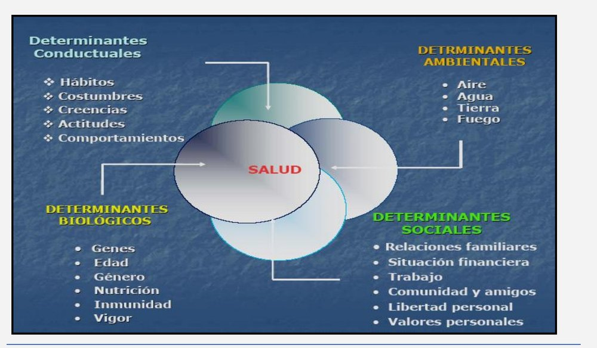
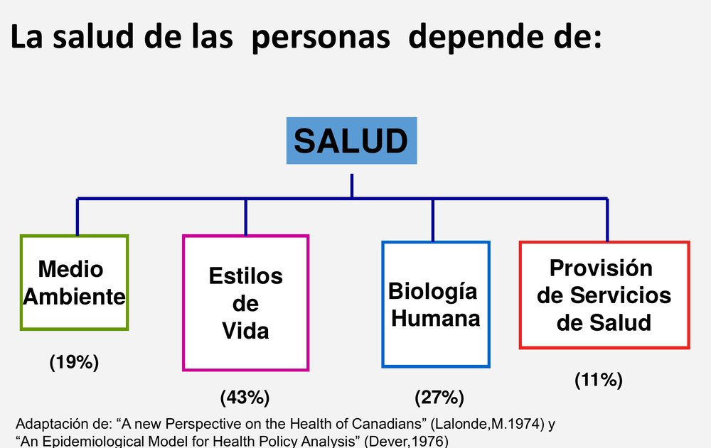
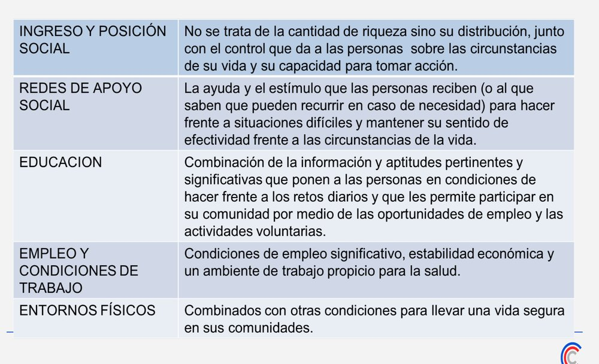

ClinicusMed · Dossiê Clinicus — Padrão de Excelência
Esse capítulo fecha a Unidade I trazendo de volta uma pergunta que já apareceu antes, no Capítulo 1: de que depende, realmente, a saúde de uma pessoa? Só que agora vamos aprofundar bem mais essa resposta — porque entender os determinantes sociais é entender POR QUE a Saúde Pública insiste tanto em atuar fora do consultório médico.
Existe até uma pergunta provocativa que costuma abrir esse tema: pra que tratar uma população e devolvê-la, depois, às MESMAS condições de vida que a adoeceram? Se você trata a pneumonia de uma criança que mora numa casa sem saneamento básico, e a manda de volta pra essa mesma casa, é bem provável que ela volte a adoecer. É exatamente esse ciclo que os determinantes sociais tentam explicar — e que a Saúde Pública tenta quebrar.
De forma mais ampla que "só" os determinantes sociais, existem 4 grandes GRUPOS de fatores que influenciam a saúde e o bem-estar das pessoas e populações:
| Tipo | O que inclui | Exemplo |
|---|---|---|
| Conductuales | Hábitos, costumes, crenças, atitudes, comportamentos | Alimentação, atividade física, consumo de substâncias |
| Biológicos | Genes, idade, gênero, nutrição, imunidade, vigor | Características próprias do organismo |
| Sociais | Relações familiares, situação financeira, trabalho, comunidade e amigos, liberdade pessoal, valores pessoais | Condições sociais e econômicas que cercam a pessoa |
| Ambientais | Ar, água, terra, fogo, e outros elementos do ambiente | Qualidade do ar que se respira, água disponível |

Você já viu esse diagrama no Capítulo 1: a saúde depende de Meio Ambiente (19%), Estilos de Vida (43%), Biologia Humana (27%) e Provisão de Serviços de Saúde (11%) — modelo adaptado de Lalonde (1974) e Dever (1976).

Só que aqui entra um dado NOVO e importante: apesar dos Serviços de Saúde pesarem só 11% no resultado final, a distribuição do GASTO em saúde favorece um "90%" pro sistema sanitário, e se aplica só um "10%" aos OUTROS fatores — justamente os que, juntos, influenciam MUITO MAIS na redução da mortalidade.
Onde nascemos + crescemos + vivemos + trabalhamos + envelhecemos → determina nossas condições de saúde.
Embora a atenção médica seja de importância fundamental, o bem-estar NÃO será alcançado a menos que se abordem as CAUSAS SOCIAIS subjacentes que corroem a saúde das pessoas. Em outras palavras: os Determinantes Sociais são os fatores que fazem com que as pessoas tenham DIFERENÇAS em relação à sua possibilidade de serem sadias, manterem-se saudáveis, ou terem a opção de recuperar sua saúde — refletindo as inequidades que existem em nossos países.
Em 2005, a OMS criou a Comissão sobre os Determinantes Sociais da Saúde (CDSS) — e a origem dessa comissão é bastante reveladora: veio de uma REFLEXÃO em torno dos dados de expectativa de vida em diferentes países do mundo. A conclusão foi clara: não existe NENHUMA razão biológica pra que exista uma diferença de 50 ANOS na expectativa de vida entre países, ou diferenças tão grandes DENTRO dos próprios países. Isso ocorre, em grande parte, por condicionantes SOCIAIS e ECONÔMICOS evitáveis — e podemos fazer muito pra mudar isso.
| Conceito | Definição |
|---|---|
| Equidade | A JUSTIÇA SOCIAL, em oposição à letra do direito positivo. Caracteriza-se pelo uso da IMPARCIALIDADE pra reconhecer o direito de cada um, usando a equivalência pra serem iguais — mas também ADAPTA a regra pra um caso concreto, com o fim de torná-lo mais justo |
| Inequidade | "A distribuição SISTEMATICAMENTE desigual do poder, do prestígio e dos recursos entre os diferentes grupos que compõem a sociedade, e que repercute na saúde" (OPS/OMS). Características: DESNECESSÁRIA, INJUSTA, EVITÁVEL |
Hablar de Determinantes Sociais não é só se referir a "fatores de risco" — é principalmente entender POR QUE os problemas de saúde se distribuem de forma DIFERENTE entre os grupos sociais. A inequidade em saúde é, inclusive, uma das barreiras das liberdades sociais.
| Medida | O que descreve |
|---|---|
| Desvantagens em saúde | Devidas às diferenças entre setores da população ou sociedades |
| Brechas de saúde | Formadas pelas diferenças entre as pessoas em PIOR situação e o RESTO da população |
| Gradientes de saúde | Relacionados às diferenças encontradas ao longo de TODO o espectro da população (não só entre extremos) |
Como exatamente uma posição social mais baixa "vira" pior saúde, no corpo de uma pessoa? Existem 3 grandes linhas teóricas que tentam explicar esse mecanismo — vale entender que elas não competem entre si, cada uma ilumina uma parte diferente do problema.
Propõe que se estabelecem padrões de alterações NEUROENDÓCRINAS que comprometem a saúde — e esses padrões se vinculam à PERCEPÇÃO e à EXPERIÊNCIA individual de viver numa determinada posição da hierarquia social. Isso se expressa, no nível INDIVIDUAL, como estresse crônico que deteriora a saúde (ou torna a pessoa mais vulnerável); e no nível da SOCIEDADE, como enfraquecimento da coesão social, com desintegração dos laços sociais — afetando negativamente a saúde de todos. Essa teoria dá mais ênfase à intervenção sobre os determinantes INTERMEDIÁRIOS.
Destaca que o vínculo entre hierarquia social e saúde está principalmente nas CAUSAS ESTRUTURAIS das inequidades — não na PERCEPÇÃO delas (diferente da teoria psicossocial). O efeito das inequidades na saúde se baseia na ausência/insuficiência de RECURSOS pra cada pessoa, associada a uma carência sistemática de investimentos em infraestrutura comunitária (educação, saúde, transporte, controle ambiental, alimentos, moradia, regulação ocupacional). As decisões econômicas e políticas condicionam a disponibilidade desses recursos — essa teoria reforça a necessidade de intervir sobre os determinantes ESTRUTURAIS (econômicos e políticos).
Reconhece explicitamente a importância de determinados MOMENTOS da vida, e da DURAÇÃO da exposição, pra entender o vínculo causal entre exposição e resultado em saúde — considerando isso em 3 níveis: a) ao longo do curso de vida de UM indivíduo; b) através das GERAÇÕES; c) nas tendências de doenças em nível POPULACIONAL. Diferente de abordagens que olham só o "estilo de vida adulto" isolado, essa perspectiva olha a trajetória INTEIRA da pessoa.
O marco conceitual da OMS pra os determinantes sociais se baseia em alguns pressupostos-chave: existe uma HIERARQUIA entre os determinantes sociais; as inequidades sociais COMEÇAM cedo na vida e tendem a se ACUMULAR ao longo dela; e diferentes "fatores de risco" tendem a se acumular e se CONCENTRAR em determinados grupos sociais/geográficos. Esse modelo foi desenvolvido principalmente por F. Diderichsen, com contribuições de M. Whitehead.
| Categoria | Componentes |
|---|---|
| Determinantes Sociais ESTRUTURAIS (também chamados "Distais") | Contexto socioeconômico e político + Posição socioeconômica/Hierarquia social |
| Determinantes Sociais INTERMEDIÁRIOS (também chamados "Proximais") | a) Circunstâncias materiais de vida/trabalho; b) Circunstâncias psicossociais de vida/trabalho; c) Condutas/estilos de vida e/ou fatores biológicos; d) O próprio Sistema de Saúde (sim — ele mesmo é considerado um determinante social); e) Coesão social/capital social |
Esses números costumam ser cobrados de forma bem específica na prova — mas o importante não é decorar cada número isolado, é entender a LÓGICA por trás deles: menor acesso a educação + água + saneamento + eletricidade → piores condições de vida → piores resultados de saúde.
| Indicador | População Não Indígena | População Indígena |
|---|---|---|
| Taxa bruta de mortalidade | 6,1 × 1.000 hab. | 16,9 × 1.000 hab. |
| Desnutrição em menores de 5 anos | 4,2% | 9,9% |
| Alfabetização (lectoescritura) | 95% | 24% |
| Água potável e saneamento básico | 52,7% | 1,4% |
| Eletricidade | 89,1% | 21% |
| Taxa de fecundidade | 3,9 | 6,3 |
| Escolaridade | 7 anos | 2 anos |
Fonte: EHI 2008, DGEEC (Dirección General de Estadística, Encuestas y Censos)
Além da comparação indígena x não indígena, existem dados adicionais sobre desigualdade socioeconômica geral no país (fonte: Exclusão Social em Saúde, Paraguai 2007, DGEEC/OPS):
Pra fechar, vale destrinchar com mais precisão o que exatamente significa cada um desses determinantes tão citados — não são só palavras soltas, cada um tem uma definição funcional específica:

| Determinante | Definição funcional |
|---|---|
| Ingresso e Posição Social | NÃO se trata da quantidade de riqueza em si, mas da sua DISTRIBUIÇÃO — junto com o controle que ela dá às pessoas sobre as circunstâncias de sua vida e sua capacidade de tomar ação |
| Redes de Apoio Social | A ajuda e o estímulo que as pessoas recebem (ou sabem que podem recorrer, em caso de necessidade) pra enfrentar situações difíceis e manter seu senso de efetividade diante das circunstâncias da vida |
| Educação | Combinação de informação e aptidões pertinentes que colocam as pessoas em condições de enfrentar os desafios diários, e que permite participar da comunidade através de oportunidades de emprego e atividades voluntárias |
| Emprego e Condições de Trabalho | Condições de emprego significativo, estabilidade econômica e um ambiente de trabalho propício à saúde |
| Entornos Físicos | Combinados com outras condições, pra levar uma vida segura nas comunidades |
Vamos acompanhar uma equipe de Saúde Pública analisando por que 2 comunidades vizinhas, no mesmo distrito, têm indicadores de saúde muito diferentes. O caso evolui em 3 níveis.
Uma equipe de Saúde Pública percebe que, na Comunidade A, a expectativa de vida é 15 anos MAIOR do que na Comunidade B — apesar das 2 estarem a poucos quilômetros de distância, e terem acesso teórico ao mesmo hospital regional. A Comunidade A tem melhor saneamento básico, mais anos de escolaridade em média, e maior renda familiar.
Pergunta: Segundo a lógica da Comissão de Determinantes Sociais da Saúde (CDSS/OMS) vista nesse capítulo, essa diferença de 15 anos na expectativa de vida entre as 2 comunidades tem alguma justificativa BIOLÓGICA?
Resposta comentada: NÃO. Segundo a própria origem histórica da CDSS (criada pela OMS em 2005), a reflexão que deu origem à comissão partiu justamente dessa constatação: NÃO existe nenhuma razão BIOLÓGICA pra que existam diferenças de até 50 anos na expectativa de vida entre países, ou diferenças tão grandes DENTRO de um mesmo país (ou, nesse caso, entre 2 comunidades vizinhas). Essa diferença de 15 anos entre a Comunidade A e B é explicada, em grande parte, por condicionantes SOCIAIS e ECONÔMICOS EVITÁVEIS — exatamente as diferenças observadas (saneamento, escolaridade, renda) são determinantes sociais estruturais e intermediários em ação. Isso configura uma INEQUIDADE em saúde, segundo a definição da CDSS: uma diferença INJUSTA e EVITÁVEL (ou REMEDIÁVEL) entre grupos populacionais — não é um destino biológico inevitável, é o resultado de uma distribuição desigual de recursos que, em princípio, PODERIA ser corrigida através de políticas adequadas.
Aprofundando a investigação, a equipe percebe que moradores da Comunidade B relatam mais estresse crônico relacionado à insegurança no emprego, além de sentirem que têm pouco controle sobre suas próprias vidas — mesmo entre aqueles com renda similar à média da Comunidade A. Ao mesmo tempo, a equipe também identifica que a Comunidade B historicamente recebeu MENOS investimento público em infraestrutura (transporte, escolas, postos de saúde) ao longo de décadas.
Pergunta: Esse achado (estresse/percepção de baixo controle + décadas de menor investimento estrutural) ilustra a atuação de quais 2 das 3 perspectivas teóricas vistas nesse capítulo, e como elas se complementam nesse caso?
Resposta comentada: Esse achado ilustra simultaneamente a TEORIA PSICOSSOCIAL e a TEORIA MATERIALISTA/NEOMATERIALISTA atuando em conjunto. O relato de estresse crônico e a sensação de pouco controle sobre a própria vida, mesmo entre pessoas de renda similar, é exatamente o mecanismo descrito pela Teoria Psicossocial (Cassel, Wilkinson) — onde a PERCEPÇÃO e a EXPERIÊNCIA individual de ocupar uma posição menos favorecida na hierarquia social geram alterações neuroendócrinas que comprometem a saúde, e enfraquecem a coesão social. Já a constatação de décadas de MENOR investimento público em infraestrutura na Comunidade B ilustra a Teoria Materialista/Neomaterialista (Smith GD, Lynch, Muntaner) — que destaca que o vínculo entre hierarquia social e saúde está nas CAUSAS ESTRUTURAIS (decisões econômicas e políticas que condicionam a disponibilidade de recursos/infraestrutura), não apenas na percepção subjetiva dessas condições. As 2 teorias se complementam: a Materialista explica POR QUE a Comunidade B tem menos recursos objetivos disponíveis (decisões políticas/econômicas históricas), enquanto a Psicossocial explica COMO essa desvantagem estrutural se traduz em dano biológico real, através do estresse crônico vivido pelos moradores.
Com base em toda essa análise, a equipe de Saúde Pública precisa decidir que tipo de intervenção priorizar: A) Aumentar o número de consultas médicas disponíveis na Comunidade B; ou B) Advogar junto ao governo local por investimento em saneamento básico, transporte público e melhoria das condições de trabalho na região.
Pergunta: Aplicando os Princípios Pra Atuar Sobre os Determinantes vistos nesse capítulo, e o modelo de Determinantes Estruturais x Intermediários, qual dessas 2 abordagens está mais alinhada com o que a evidência em Determinantes Sociais recomenda, e por quê?
Resposta comentada: A abordagem B (advogar por investimento em saneamento, transporte e condições de trabalho) está muito mais alinhada com os Princípios Pra Atuar Sobre os Determinantes vistos nesse capítulo — especialmente o princípio de "colocar o foco fundamental em MODIFICAR os determinantes, e não só conjurar seus efeitos". Aumentar apenas o número de consultas médicas (opção A) atuaria sobre o SISTEMA DE SAÚDE — que, como vimos, é classificado como um determinante social INTERMEDIÁRIO — mas deixaria intocados os determinantes ESTRUTURAIS (o contexto socioeconômico/político e a posição social que geram a desigualdade de investimento histórico entre as 2 comunidades). É basicamente repetir o problema mencionado na abertura desse capítulo: tratar a população e devolvê-la às MESMAS condições que a adoecem. A opção B, ao buscar mudar saneamento, transporte e condições de trabalho, atua diretamente sobre CIRCUNSTÂNCIAS MATERIAIS DE VIDA/TRABALHO (um determinante intermediário) e, ao advogar junto ao governo, também tenta influenciar o CONTEXTO SOCIOECONÔMICO E POLÍTICO (um determinante estrutural) — seguindo também o princípio de "promover um enfoque MULTISSETORIAL" (não depende só da saúde, envolve transporte, saneamento, trabalho) e de "focalizar ações em âmbitos GEO-DEMOGRÁFICOS com alta vulnerabilidade" (a Comunidade B especificamente). Isso não significa que mais consultas médicas sejam inúteis — mas, isoladas, elas tratam o SINTOMA da desigualdade, não sua CAUSA estrutural.
O sistema guarda, no seu navegador, quais cards você já sabe bem e quais precisam voltar mais cedo — cada vez que você avalia um card, ele recalcula quando ele deve voltar.
10 questões, do mais básico ao mais puxado. Escolhe uma alternativa, depois clica em "Ver comentário completo" — vale a pena ler até quando você acerta, porque o comentário explica cada alternativa, não só a certa.